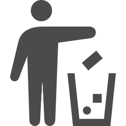

2022.5.10
UPUPUP
2022.5.22
chat
2022.5.25
总结月底
2022.6.2
test
备忘录
周六周一打扫宿舍卫生
一周洗一次衣服
实训作业要做
拿快递
every day running

树洞
要开开心心的
book is good
懂得关心别人就是关心自己
每天都拿出自己的最好状态
我要对自己好一点
赏·新年初雪
眼睛和心灵里的人间 理应浪漫
什么是浪漫。 在新年的第一天，下起了雪，不早不晚正是这一天。这一天的天津是白雪铺满了人间的，上海没有那么浪漫，天气一直都是阴阴的，我躺在沙发上刷着朋友圈，看到在天津的同学说下雪了，不以为然，过一会儿，开始有人发视频和图片，点开一看真白。 我是南方的孩子，白雪也会偶尔光顾我们的小城，但是对于我来说还是不容易能够见到白雪，因为偶尔下的小雪要不了多久就会变成水，人们的鞋也不会干净，踩着雪化成的水，街上就变得很脏，但是白雪到达了一定的厚度，即使是污浊的，也不会染到它，我喜欢那种感觉。白雪在视觉上带来的，不同于蓝色的大海的舒适，不同于绿色的草原的自由，相反每当我看到白雪的时候，不会觉得自己的心情有清爽感，它带来的是神圣会让我自愧，即使这样，我还是会很喜欢白雪，因为那复杂的羞愧的自我的内心也是向往白净。 我总会看着路灯下的白雪飘过，那是我平凡世界里真切感觉得到的浪漫。忆·往昔今昔
既然抓不住 那就使劲珍惜
往往回忆都是美好的，我会回想起过去的某一时刻，会觉得很好，会有很多在那当下没有的思绪和情感，我会想那个时候的我为什么不那样想，我又会想那现在的我会不会又有什么思绪和情感没有做到，那种感觉就像是害怕自己在某一个时间错过了什么一样，比如是一句话，亦或是一个行动，不得不说，其实我们的时光里，很多时候我们对待事物就是很快的速度，有一次妈妈给我打视频，其实她还是想我了，然后就说了一些伤感的话题，我感觉她有点难过想哭，我记不得我怎么做的了，但是我回想起来，我是不是应该说一些温暖的话，安慰一下她，我记不得我安慰了没有，也许是没有吧。其实这样的事还是很多的，我们就做不到什么事都会当下有感受或者是每一个态度都能及时捕捉，每每回想起这些事，会觉得自己应该怎么做，在当下，就会想要去做的更完善，就会想着自己这样是不是还差点什么，就像是拿手去抓鱼，滑溜溜的，根本抓不到。夜·困意一刻
力量是如此沉重 却又好像什么都没有
我承认有时候的我是寂寞的，这种寂寞不是找点事情打发一下就消失的寂寞，而是一个人空落落的寂寞，这种感觉也并非一个人的时候才会出现，在人群里或是一个热闹的环境里，也会突然感觉到空落落的。逃离，是在这种感觉出现的时候的第一反应，但是无论如何也逃离不了，就很难受的不然这种感觉它也不会再出现了。 这种寂寞，我认为是生物层面的寂寞，是无法控制的，能控制的是我们的大脑，大脑使得这种寂寞并没有什么出处，若是没有大脑，那么这个世界不就乱了吗，所以思考是重要的，我认为其重要性，就像是我们每天必须吃饭一样，一日不思考，那就会饿，饿多了，也就不健康了。在各方面，我们都是要不断的补充知识的，说来也奇怪，思考也是人间自带的一种神奇，一个瘦小的人可以很强大，充满力量，那种力量是迷人的，我们生来就被注入慕强基因，是思考使得人和人之间根本的差距。